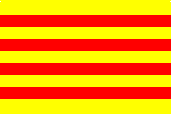

Els Segadors is a popular song from the XVII century. It's about the war that catalans made to Felipe IV de Castilla, and specially to Conde-duque de Olivares.
In 1892 Francesc Alió published the lyrics of the old song Els Segadors, taking a new melody from an old song. In 1899, the magazine La Nació Catalana made a contest to give to the song, shorter lyrics. The wining poetry, from Emili Guanyavents, is the actual version.
During the dictatorship of Primo de Rivera (1923-1930) and General Franco (1939-1975) the song was forbidden.
A low from Parlament de Catalunya established that Els Segadors would be the National song from Catalunya.
|
|
|